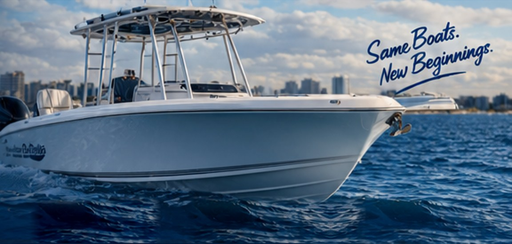
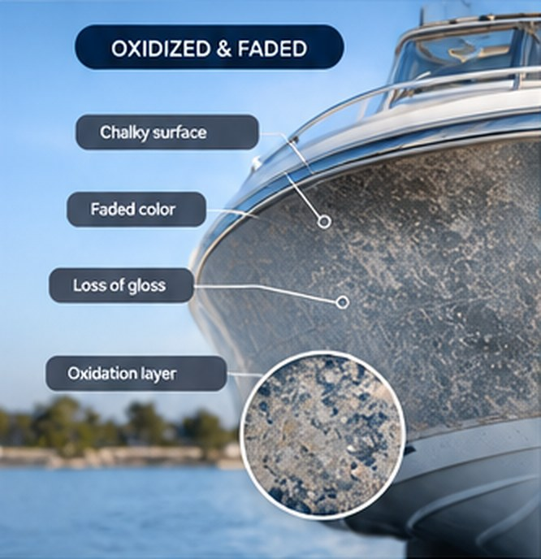
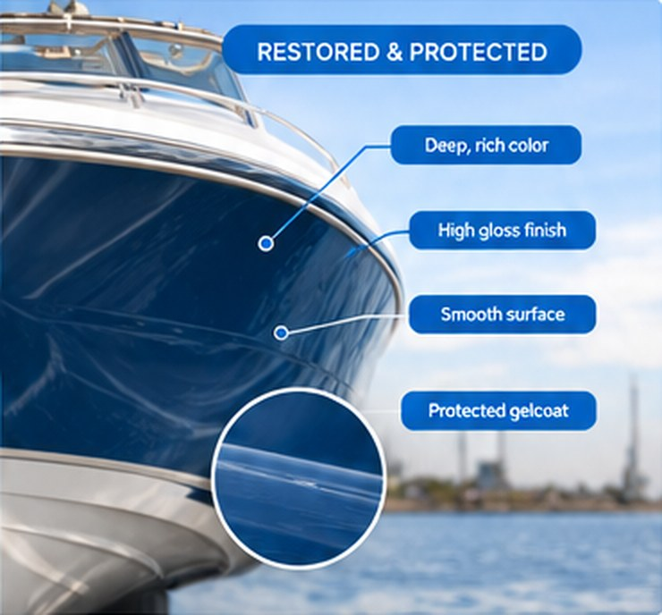
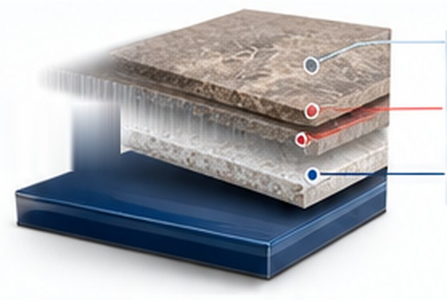
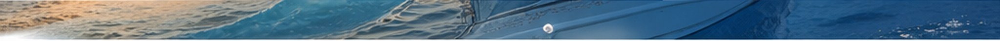

Remove stubborn oxidation, restore the original color and shine, and protect your gelcoat for the long haul. Captain Levi’s uses professional-grade compounds, polishes, and marine coatings to bring your boat’s finish back to like-new condition.
Oxidation makes your boat look dull, chalky, and aged. It doesn’t just affect appearance — it can also weaken the gelcoat and make it more vulnerable to damage. Our oxidation removal service eliminates the haze, restores the original color, and leaves your boat with a deep, glossy, long-lasting finish.

Oxidized & Faded Chalky surface Faded color Loss of gloss Oxidation layer
Restored & Protected Deep, rich color High gloss finish Smooth surface Protected gelcoatWe evaluate the condition of your gelcoat and identify the level of oxidation.
Light wet sanding removes the damaged oxidized layer without harming the gelcoat.
We use professional-grade compounds and polishes to restore clarity and shine.
Apply a high-quality marine wax or ceramic sealant for long-lasting protection.
See the dramatic difference our oxidation removal service can make.
UV rays, saltwater, heat, and environmental exposure break down the gelcoat surface over time, causing a chalky, faded appearance. Oxidation sits on the surface and can be removed, restoring the original color and gloss.


Get a free quote today and bring your boat’s finish back to life.
Chalky, faded gelcoat you want brought back, need a quote, or ready to schedule? Fill out the form or give us a call — we’ll get back to you as soon as possible. Your boat deserves the best, and we’re here to make it happen.
Tell us a little about your project and we’ll get back to you quickly.